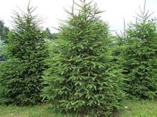

İğne Yapraklılar

Sonbaharda yaprak dökmeyen ve iğne yapraklı bir ağaç türü olan çam soğuğa ve kuraklığa karşı dayanıklıdır. Bu durum onu her yerde yetişebilecek bir ağaç yapmıştır. Havayı da temizlediği için çam ağaçlarını her yerde görmek mümkündür. Çam ağaçları aynı zamanda 100 ile 1000 yıl yaşamakta olup boyları 9 ile 25 metre arasında değişmektedir.